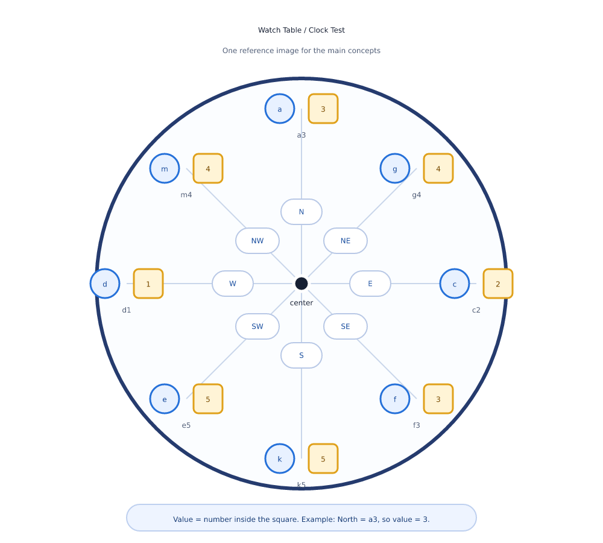

1. Where this test fits
The lecture says the ALP psycho test pattern is the same for fresh RRB ALP candidates and for GDCE / departmental ALP candidates. The post is ALP, so the psycho test is the same.
The psycho test has five main sections. This page explains one part of Section 2.
Following Direction Test has two parts: Table Test and Watch Table Test. The Watch Table Test is also called the Clock Test.
The lecture says the official pattern gives 10 minutes for 20 questions. The answer is always a number inside a square.
2. One reference image for every concept
Keep this picture in mind while reading the concepts below. The image is also saved as a separate file in the assets folder.


3. Read directions from the center
The eight directions are fixed. Start at the center, then look towards the circle. Opposite directions face each other.
| Direction | Component | Value | Opposite direction | Opposite component |
|---|---|---|---|---|
| North (N) | a3 | 3 | South | k5 |
| North-East (NE) | g4 | 4 | South-West | e5 |
| East (E) | c2 | 2 | West | d1 |
| South-East (SE) | f3 | 3 | North-West | m4 |
| South (S) | k5 | 5 | North | a3 |
| South-West (SW) | e5 | 5 | North-East | g4 |
| West (W) | d1 | 1 | East | c2 |
| North-West (NW) | m4 | 4 | South-East | f3 |
4. Concepts in brief
Clockwise and anti-clockwise
Clockwise order is: N, NE, E, SE, S, SW, W, NW, then back to N. Anti-clockwise is the reverse order. In this test, right means clockwise and left means anti-clockwise. Always imagine you are standing at the center.
Previous and next
Use clockwise order to decide this. Previous means one step before. Next means one step after.
Pair, continuous pair, and frequency
- Pair: the same digit appears two times.
- Continuous pair: the same digits are next to each other.
- Frequency: how many times a digit appears on the path asked in the question.
Exchange: change only the named part
- Exchange of direction: swap direction names only. Components stay in the same place.
- Exchange of component: swap the full letter and number.
- Exchange of letter: swap letters only. Digits stay.
- Exchange of digit: swap numbers only. Letters stay.
"From" and "of"
This is a word trap. In the lecture, from includes the starting point. Of excludes the starting point.
Second right of a3: skip a3; g4 is 1 and c2 is 2. Answer value = 2.
"In front of" and "opposite"
For a direction, read from the center. "In front of North" means the component on the North side, a3. "Opposite of North" means South, k5.
For a component, both words can point to the same place. "In front of a3" and "opposite of a3" both mean k5.
Shape questions
Some questions ask you to join points or components to make a triangle, rectangle, square, or rhombus. If the question says inside the shape, use only the points on that shape. If it does not say this, use the full clock.
Vertex and perpendicular vertex
When three components make a triangle, look for two equal sides. The corner where those two equal sides meet is the vertex. If those equal sides also make a 90 degree angle, it is called a perpendicular vertex.
Alphabet order
Ignore the digits. Put the letters in A to Z order. Then give the value of the needed letter.
Simple math
First find the value. Then do the math asked: add, subtract, multiply, square, square root, cube, or cube root.
5. Common traps
Do not answer with the letter
The final answer is the number inside the square. For a3, the answer is 3, not a.
Do not read direction from outside
The center of the circle gives the direction. This single rule removes many doubts in "in front" and "opposite" questions.
Do not mix the four exchange types
Exchange of direction, component, letter, and digit are four different actions. Change only the part named in the question.
Practice images may look different
Some books draw the directions inside, some draw boxes, and some draw directions outside the circle. The lecture says the final exam image is expected to show N, E, S, W, letter plus digit, and the digit inside a square. Do not get confused by design changes. The concept stays the same.
6. Quick practice
Use the reference image above. Try each question before opening the answer.
1. What is the value of the component in the North?
Show answer
North has a3. The number inside the square is 3. Answer: 3.
2. Which component is opposite to c2?
Show answer
c2 is in the East. Opposite of East is West. West has d1. Answer: d1, value 1.
3. Move two steps clockwise from g4. Where do you stop?
Show answer
g4 is North-East. One step clockwise goes to c2. Two steps go to f3. Answer: f3, value 3.
4. Exchange the digits of a3 and k5. What is the new value in the North?
Show answer
Only digits change. North becomes a5. The new value is 5.
5. What is the square root of the value in the North-East?
Show answer
North-East has g4. Value is 4. Square root of 4 is 2. Answer: 2.
6. "In front of East" and "opposite of East" are different. What are the components?
Show answer
In front of East means the component at East: c2. Opposite of East means West: d1.
7. Second right from a3: what component do you get?
Show answer
"From" includes a3 as the first count. The second count is g4. Answer: g4, value 4.
7. Exam strategy
The lecture repeats one main idea: learn the concepts once, then practice many times. This test is more about speed and clear reading than memory.
- Learn the fixed order: N, NE, E, SE, S, SW, W, NW.
- Read every word carefully, especially from, of, in front, opposite, letter, digit, direction, and component.
- Always give the number inside the square as the answer.
- Practice sectional tests first, then full tests.
- Practice on a laptop if possible. The real test interface may scroll, so screen practice builds speed.
- Try to reach 20 correct answers in 10 minutes.
- Check the latest official instructions before the exam.